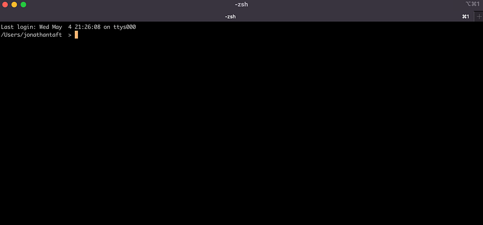
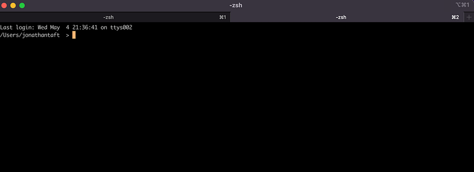
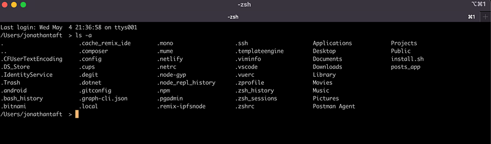
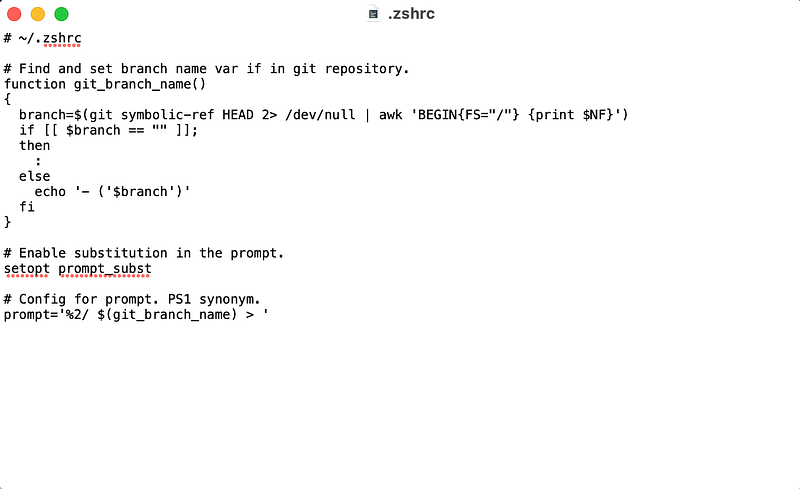
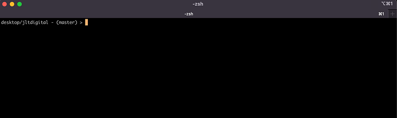
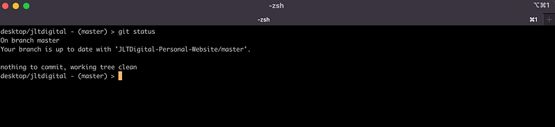

Every developer who has a Mac has used the standard Mac terminal that comes straight out of the box. Now it works and you can do all your usual stuff but do you want to upgrade that bog standardness and get something a bit more functional.
I have a simple setup that will 1000% improve your terminal life 😁👍
ITerm2
iTerm2 - macOS Terminal Replacement
iTerm2 is a replacement for Terminal and the successor to iTerm

Being able to have tabs and split them as well just makes your life so much easier.

There are other features too other than just splitting panes. You can Hotkey windows, use search functionality, have autocomplete, copy, paste, and a whole host of other configurations.
If you are a developer though an important tool you will use is Github. Wouldn’t it be great if you could see what branch you are on in the terminal window? Well, let us add to your new Iterm2.
ZSH Prompt for Your Git Branch
I found this through a great article by Nick Gibbon:
1:
Find your .zshrc file on your computer. This will typically be in your root user folder as a hidden file. Here I have opened a new terminal and within my user folder entered ls -a

Here you can see I have a .zshrc file. Now I didn’t have this originally but you can just create one by entering touch .zshrc and open this up either in the text editor or your favourite IDE.
2:
Next up when you have this file open you can add the following script:
Now with the script in this file should look something like this:

Save the file and now you will have your Git branch show up in your terminal.
3:
Give it a try. Open up a new ITerm and cd into a folder that is on your local machine that is linked to a Github Repo.
In this instance I have moved into a folder I have that is linked to a repo:


voila ⭐️⭐️⭐️ there it is showing me I am on the master branch right there in the terminal. You can even checkout to a new branch or another branch in the repo and it will update within the terminal with your new branch.
Newer: A Developer’s Technical Breakdown of Shopify’s Dawn Theme
Older: NFTs. What are they all about?
First published on Medium.